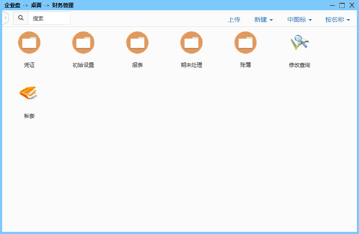
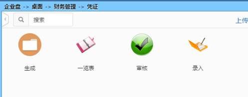
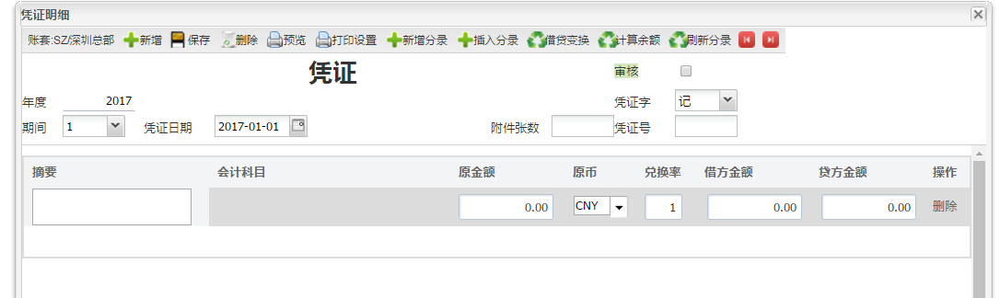
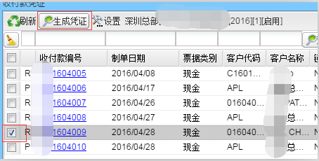
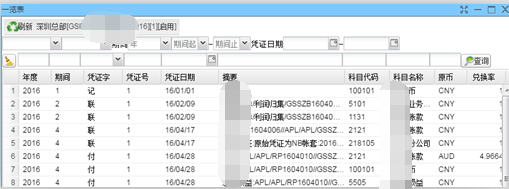

供应商管理包括凭证、初始设置、报表、期末处理、账簿、修改查询、帐套子模块。
点击财务管理后弹出下图功能主界面

1.点击凭证进入页面：

2.凭证有生成应收应付凭证、收付款凭证、一览表、审核、录入功能，点击“录入”按钮进入凭证录入界面：

在“凭证字”下拉框处可设置“记”、“收”、“付”、“转”等凭证字，保存凭证后可分别录入分录，录入完毕后保存退出即可；
3. 点击“应收应付凭证”和“收付款凭证”可打开相应界面生成凭证， 生成收付款销帐凭证：进入“收付款凭证”页面后选择需要生成凭证的条目点击“生成凭证”即可；

4. 审核：系统可设置凭证必须通过审核后方可过账，也可不设置审核。如需审核，进去相应的凭证条目后，将审核勾上即可：
5.一览表：可列表某一时间段后有凭证的明细，方便查看：
